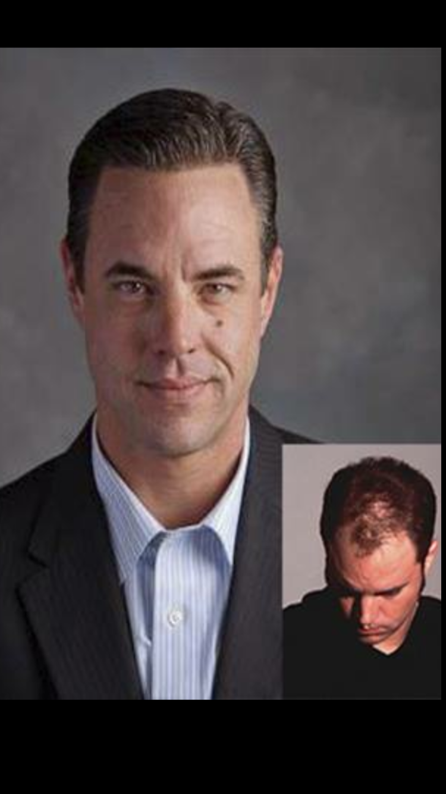
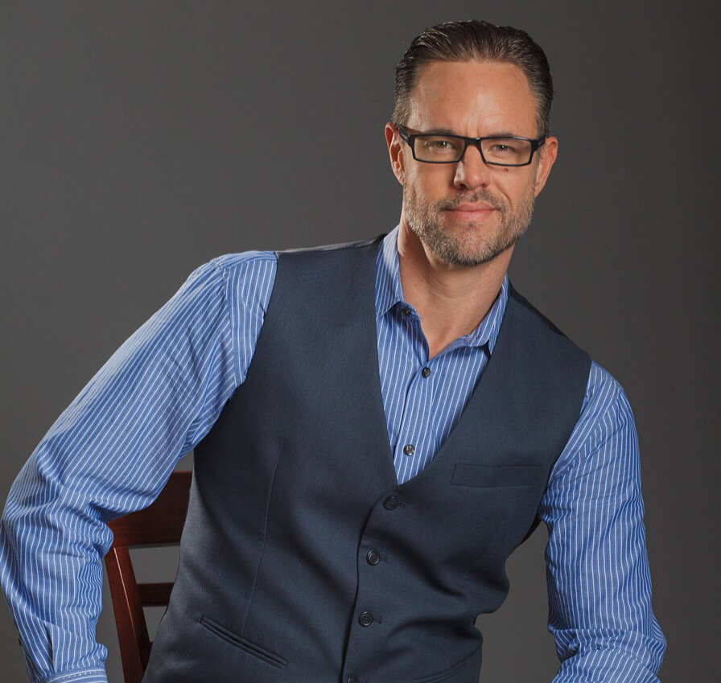

I was eighteen years old the first time I noticed my hair thinning. At an age when most guys are worrying about college and girls, I was standing in front of a mirror wondering why my hairline was disappearing. The depression that followed affected every part of my life — my confidence, my social life, everything. I didn't know anyone else going through it, and I sure as hell didn't know what to do about it.
By 21, I finally decided I was going to do something about it. I walked into a hair replacement clinic in Denver and became a client. I had to borrow money just for the deposit. But the moment I looked in the mirror after that first appointment, something shifted. I felt like myself again. That feeling — that transformation — is something I've spent my entire career trying to give other people.
"The day I got my hair back was the day my real life started. I knew right then that this was bigger than vanity — this was about giving people back a piece of themselves they thought was gone forever."
Trouble was, I couldn't pay off my balance. So the owner hired me to do telemarketing to work off what I owed. Turns out, selling something you actually believe in — something you've experienced firsthand — is a lot easier than selling something you don't. I moved from telemarketing to full-time consultant to manager in about two years.
Then came the opportunity that changed everything. The business was failing. Weeks away from closing. I was 24 years old, making $10 an hour, with no business education, no college degree, and not a dollar of my own money. But I found an investor, and in July 1997, I bought the company. Hairlines, Inc. — which I'd later rename Hair Vital.
Everyone told me I was crazy. Maybe I was. But I knew two things: I knew this product changed lives because it changed mine, and I knew I could outwork anyone. So that's what I did. I paid off the loan, bought out my investor by 2004, and owned 100% of the company. For the next 25 years, I served over 3,000 clients and built a reputation that took me places I never expected.

My personal transformation — what started it all

25 years later, still in the chair
At 21, walked into a hair replacement clinic in Denver. Borrowed money for the deposit. Left feeling like a different person.
Couldn't afford payments, so the owner put me to work. My real-world experience made me a natural — I went from phones to full-time sales in months.
At 24, with no money and no degree, I found an investor and purchased a failing company that was weeks from closing. Hair Vital was born.
Met a representative from a wholesale company in Florida. Got certified on new methods. Built relationships with colleagues I'm still close with today.
Flew to Florida to model for marketing material. Became brand ambassador for two of the largest wholesale companies — a role I held for over 15 years.
Full-page feature in Details Magazine. Was the first person to try and model Virtual Reality Hair — technology that would revolutionize the industry.
Paid off loan, bought out investor. Full ownership of Hair Vital. No more partners, no more debt — just me and the mission.
Featured on GMA's "Movie and a Makeover" segment after a New York Magazine profile. National spotlight on what we'd been building in Denver.
Brought clinical trichology to Hair Vital — the first company in Colorado to offer it. Opened the door to helping people at the earliest stages of hair loss.
Honored at the Hair Visions International Conference for testing new technology and giving honest feedback. Still one of the proudest moments of my career.
After 25 years and 3,000+ clients, I sold Hair Vital and moved to Florida. But I wasn't done — I was just getting started on the next chapter.
Earned USTI and AMCA trichologist certifications. Now focused on consulting, training, and helping the next generation of industry professionals.
In March 2020, we shut down. Two months with no appointments, no revenue, and a room full of clients who relied on us for something deeply personal. But shutting down didn't mean giving up.
I shipped supplies to clients daily. Drove to their houses to drop off product. Did FaceTime tutorials showing guys how to maintain their hair systems at home — most of them had never done it before. We made it work.
When we reopened, we worked 20 straight days to get every single client back in the chair and caught up. Twenty days. No breaks. Because that's what they needed from us.
Then the supply crisis hit. Hair wasn't available worldwide. I spent hundreds of thousands building an inventory — a bet that kept us in business for the next two years when most competitors were scrambling. Other studios were calling me, begging for any hair I could spare. Luckily, the relationships I'd built over two decades paid off. My reps gave me a heads-up to buy before anyone else knew what was coming.
COVID was the hardest professional challenge I've faced. But it also proved something I'd always believed: relationships and preparation beat everything else. Every time.
I'll tell you what I actually think — even if it's not what you want to hear. When manufacturers send me new products, I tell them exactly what works and what doesn't. That honesty is why they kept coming back to me for over 20 years.
The industry has been too focused on replacement for too long. Trichology opens up a massive untapped market — people with early hair loss, scalp conditions, and people who don't even know what's possible. If you're not offering it, you're leaving money on the table.
Clients can feel whether people are happy to work somewhere. A motivated, positive staff is the single biggest competitive advantage you can have. I don't care how good your product is — if your team is miserable, your clients know it.
The biggest mistake I see is complacency. The businesses that thrive are the ones with leaders who are always looking for an edge — new technology, better systems, a fresh approach. The moment you stop evolving is the moment you start dying.
I've lived every side of this industry. Let me put that experience to work for you.